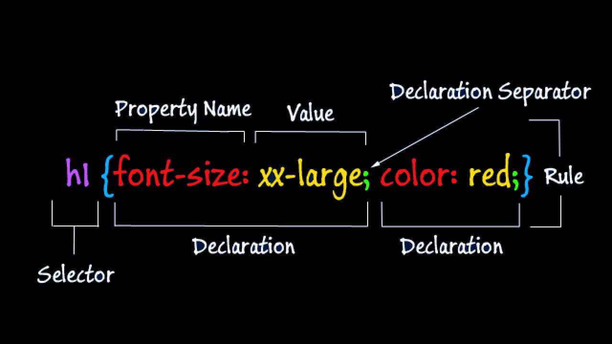

Cascading Style Sheets
(CSS)
CSS is the language for describing the presentation of Web pages, including colors, layout, and fonts. It allows one to adapt the presentation to different types of devices, such as large screens, small screens, or printers. CSS is independent of HTML and can be used with anyXML-based markup language. The separation of HTML from CSS makes it easier to maintain sites, share style sheets across pages, and tailor pages to different environments. This is referred to as the separation of structure (or: content) from presentation.
Benifits of CSS
CSS is a powerful tool as long as you know certain tips, best practices, and avoid problematic issues. With CSS web design, you can adjust the layout of a webpage. Without having to define the appearance for every single element, table, or block of text in the HTML file itself.
Rules of CSS
A CSS rule is a grouping of one or more CSS properties which are to be applied to one or more target HTML elements.A CSS rule consists of a CSS selector and a set of CSS properties. The CSS selector determines what HTML elements to target with the CSS rule. The CSS properties specifies what to style of the targeted HTML elements.
Aspects of CSS

- 1. Selector
- Click here to know more.
- 2. Property Name
- Click here to know more.
- 3. Property Value
- Click here to know more.
Name:- Nisha Verma
Roll no:-1906128